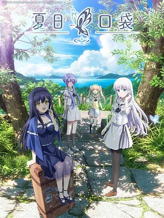

7.4
夏日口袋
Summer Pockets
2025
日本
评分 7.4
导演:
小林智树
演员:
千叶翔也 / 小原好美 / 高森奈津美 / 稗田宁宁 / 岩井映美里
类型:
奇幻,爱情
剧情简介
故事从鹰原羽依里踏上鸟白岛的渡轮开始。夏日的阳光在海面上跃动，他在抵达的那一刻，看见一名少女站在风口，被海风轻轻托起的长发几乎与地平线融合。少女的身影让他短暂出神，而当他回过神来时，那抹剪影已悄然消失，只留下深深烙在心底的疑问。羽依里来到祖母的旧宅，协助姨妈整理满载回忆的遗物，那些泛黄的照片、旧式器具、潮味木板，都让他在陌生的小岛生活中渐渐找到一种奇妙的安定感。岛上的节奏朴素而缓慢。他在湛蓝的海边、灯塔的阴影里、蝉鸣不断的小路上，与几个性格各异的少女陆续相遇：有人追寻难以解读的记忆，有人追逐隐匿在森林深处的光影，有人渴望找回遗失的宝物。她们的故事像被海风吹散又重新聚拢的碎片，与羽依里不经意地交织在一起。随着日子推移，羽依里发现这些邂逅背后，似乎隐含着时间与记忆的奇妙力量，让他在宁静而细腻的夏天中不断直面自我，也慢慢理解亲情、遗憾与成长的重量。他开始想，如果这个夏天能一直延续下去，那么岛上的海声、晚风以及那些连接着心意的瞬间，也许就不会被遗忘。